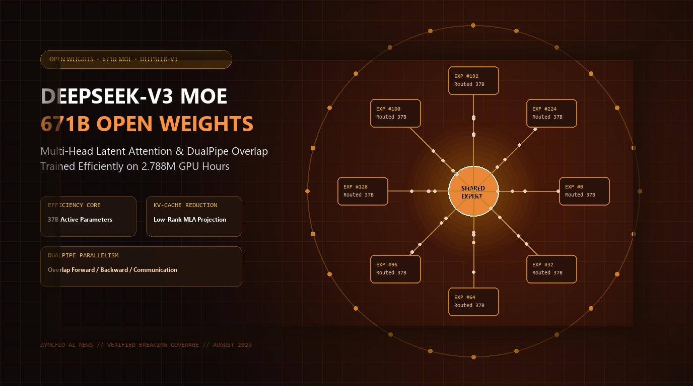

DeepSeek Releases DeepSeek-V3: 671B Parameter Open Mixture-of-Experts Architecture with Multi-Head Latent Attention & DualPipe

HANGZHOU, CHINA — August 24, 2026 — In another monumental release for the global open-source AI community, DeepSeek AI has published the complete weights and technical architecture for DeepSeek-V3, a 671-billion-parameter Mixture-of-Experts (MoE) foundation model that challenges top-tier proprietary models while requiring only 37 billion active parameters per forward pass.
1. Architectural Innovations: Multi-Head Latent Attention (MLA)
One of the primary bottlenecks in running frontier language models is the memory footprint of the Key-Value (KV) cache during inference. DeepSeek-V3 solves this through Multi-Head Latent Attention (MLA):
MLA projects key and value vectors into a heavily compressed low-rank latent space during generation, slashing KV cache memory consumption by over 70% compared to standard Multi-Head Attention (MHA) and Grouped-Query Attention (GQA). This allows DeepSeek-V3 to serve massive context windows of up to 128k tokens with exceptionally high throughput on commodity GPU clusters.
"DeepSeek-V3 proves that frontier model performance does not require brute-force compute budgets. Through innovative architectural co-design—combining fine-grained MoE routing, latent attention compression, and overlap parallelism—we can democratize frontier intelligence for researchers worldwide."
2. DeepSeekMoE & Auxiliary-Loss-Free Load Balancing
Traditional Mixture-of-Experts models suffer from routing collapse or representation degradation when using standard auxiliary load-balancing losses. DeepSeek-V3 introduces:
- Fine-Grained Expert Segmentation: 256 routed experts plus 1 dedicated shared expert ensure that common foundational representations are shared across tokens while specialized domains are handled by expert subsets.
- Auxiliary-Loss-Free Balancing: Dynamically adjusts expert bias terms based on real-time load without adding punitive loss gradients, preserving pure task performance.
- Multi-Token Prediction (MTP): Trains the model to predict multiple future tokens simultaneously, accelerating training convergence and enabling fast speculative decoding during deployment.
Key Architectural Benchmarks: DeepSeek-V3
3. DualPipe: Overlapping Computation and Inter-Node Communication
Training 671B parameter models across thousands of GPUs typically induces massive communication latency during all-to-all expert dispatch. DeepSeek developed DualPipe, an innovative pipelining strategy that organizes computation into dual bidirectional streams.
By interleaving forward computation, backward activation recomputation, and inter-node expert token routing, DualPipe achieves near-zero communication overhead, keeping GPU Tensor Cores saturated at peak FP8 compute utilization.
4. Impact on the Global AI Ecosystem
The availability of DeepSeek-V3 under permissive licensing provides enterprise developers, university research labs, and independent startups with a world-class foundation model that can be fine-tuned locally and deployed on private infrastructure without API dependencies.